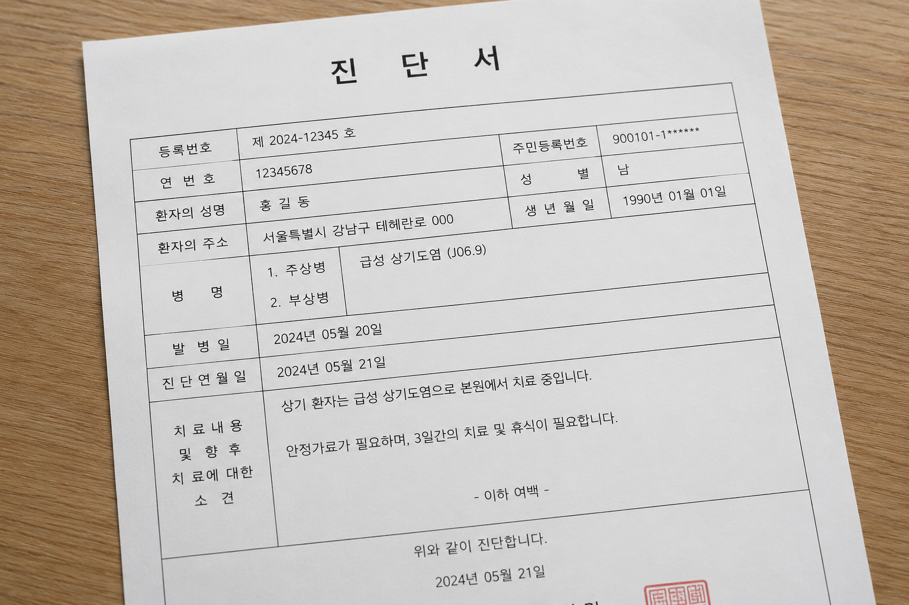
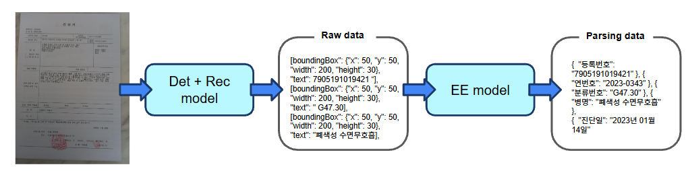
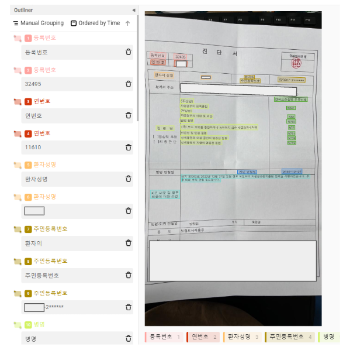
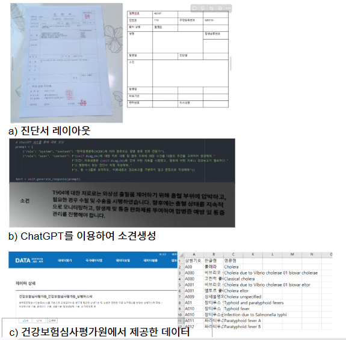
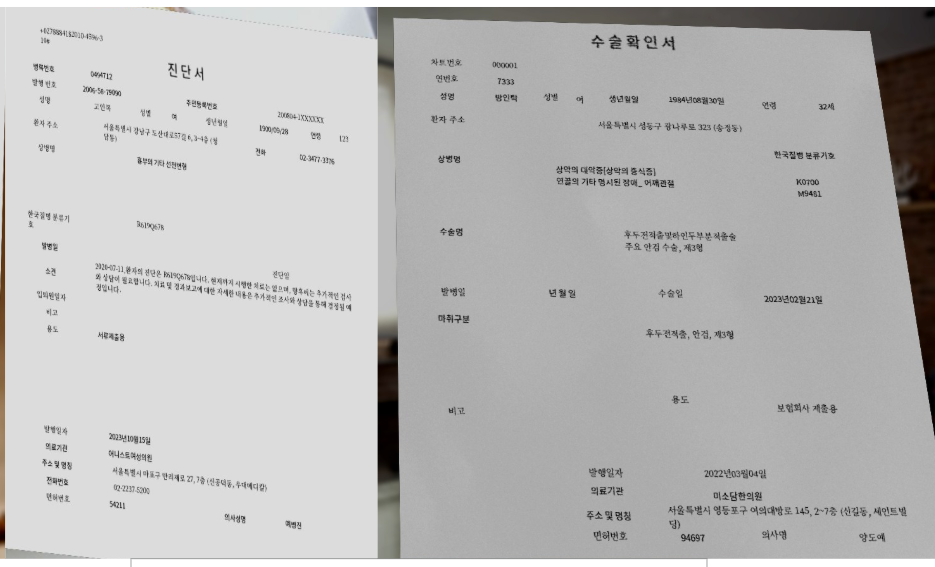
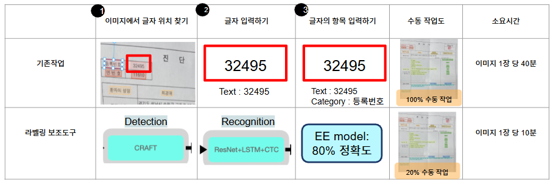

PROJECT TITLE
진단서 Entity Extraction 모델 고도화 및 Multi-GPU 서빙
TECHNOLOGIES
Python · PyTorch · LayoutXLM · FastAPI · Gunicorn · NGINX · Docker · Linux
ROLE
Project Leader / End-to-End Development
CONTRIBUTION
-
Entity Extraction 모델 개발 및 Data-centric 학습 Pipeline 구축
LayoutXLM 기반 Entity Extraction 모델을 개발하고, 모델 학습 → 평가 → Error Analysis → Dataset 재구축 Cycle을 반복해 성능을 지속적으로 개선했습니다. -
Edge Case 중심 Dataset 구축 및 Human-in-the-loop Labeling Tool 개발
모델이 잘 처리하지 못하는 희소 Entity·비정형 Layout을 분석해 Synthetic Data로 보강하고, OCR 및 Entity Extraction 모델의 Prediction을 활용한 Human-in-the-loop 라벨링 환경을 구축했습니다. -
Multi-GPU AI Model Serving 환경 구축
NGINX → Gunicorn → FastAPI 구조를 구성하고, 하나의 Endpoint로 들어오는 요청을 여러 GPU의 Model Process로 분산 처리하는 추론 환경을 구축했습니다.
IMPACT
-
Entity Extraction F1-score 0.808 → 0.896 향상
Synthetic Data와 Real Data를 단계적으로 개선하며 진단서 Dataset에서 목표했던 약 90% 수준의 Entity Extraction 성능을 달성했습니다. -
라벨링 작업시간 75% 단축
모델 Prediction을 라벨링 초안으로 활용해 이미지 1장당 약 40분이 소요되던 작업을 10분으로 단축했습니다. -
Multi-GPU 기반 서비스 추론 구조 구축
단일 Endpoint로 수신된 요청을 2개 GPU의 Model Process로 분산 처리할 수 있는 서비스 구조를 구축했습니다.
Overview

OCR 모델에서 추출된 Raw Text를 병명, 분류번호, 환자정보 등 구조화된 정보로 변환하는 Entity Extraction 모델을 개발했습니다.
모델 성능 개선뿐 아니라 데이터 구축 비용을 줄이기 위해 모델 Prediction을 활용한 Human-in-the-loop 라벨링 프로세스를 설계하고, 최종 모델을 Multi-GPU 환경에서 서비스할 수 있도록 추론 구조까지 구축했습니다.
OCR → Entity Extraction → Error Analysis → Dataset Improvement → Human-in-the-loop → Multi-GPU Serving
Problem

진단서 OCR 결과를 병명, 분류번호, 환자성명, 진단일, 의료기관 등 구조화된 Entity로 자동 변환하는 모델이 필요했습니다.
모델 성능을 높이기 위해 실제 데이터를 지속적으로 추가해야 했지만, 이미지 1장당 라벨링에 약 40분이 소요되어 데이터 구축 비용과 시간이 큰 문제가 있었습니다.
Analyze
진단서는 일반적인 Text Classification과 달리 Text 내용뿐 아니라 문서 내 위치와 Layout 정보가 중요한 구조화 문서라고 판단해 Text·Image·Layout 정보를 함께 활용하는 LayoutXLM을 기반 모델로 선정했습니다.
초기 Dataset의 Error Analysis 결과, 환자성명·등록번호와 같이 자주 등장하는 항목은 높은 성능을 보였지만 수술명·수술일·소견과 같이 빈도가 낮은 항목과 비정형 Layout에서 성능이 크게 저하되는 것을 확인했습니다.
Edge Case를 보강하기 위해 Synthetic Data를 추가했지만, 추가 데이터를 계속 늘려도 F1-score가 0.838 → 0.840 → 0.836 수준으로 정체되면서 단순한 Synthetic Data 확대만으로는 추가 성능 개선에 한계가 있다고 판단했습니다.
Action
1. Test Dataset & Baseline 구축
모델 개선의 기준이 되는 진단서 Test Dataset 135장을 구축하고, 쉬운 케이스부터 복잡한 Layout·희소 Entity가 포함된 케이스까지 다양한 난이도의 문서가 포함되도록 구성했습니다.
Word-level 기준으로 Ground Truth와 Prediction의 Entity Category를 비교해 Precision, Recall, F1-score를 평가했습니다.
2. 실제 진단서 기반 Dataset 구축

실제 진단서 300장을 Label Studio를 활용해 직접 라벨링하고, 병명·분류번호·환자성명·진단일·의료기관·수술명·수술일·소견 등을 포함한 15개 Class의 학습 Dataset을 구축했습니다.
Precision 0.806 · Recall 0.809 · F1-score 0.808
수술명 F1 0.526, 수술일 F1 0.455, 소견 F1 0.601로 희소 Entity와 Edge Case에 대한 성능 보강이 필요하다고 판단했습니다.
3. Edge Case 중심 Synthetic Data 구축


Dataset v1의 Error Analysis를 기반으로 SynthDoG을 활용해 Synthetic Document 600장을 생성했습니다.
- 실제 진단서의 항목 위치와 Layout 반영
- 등록번호·환자명·주민등록번호 등 값 Random Generation
- 건강보험심사평가원의 병명·분류번호 데이터 활용
- 소견 Text 및 비정형 Layout 생성
- 수술명·수술일 학습을 위한 수술확인서 Layout 추가
F1-score 0.808 → 0.838
4. Real Data 중심 Dataset 개선 & Human-in-the-loop Labeling
추가 성능 개선을 위해 Synthetic Data를 1,000장, 500장씩 더 확장했지만 F1-score가 0.838 → 0.840 → 0.836 수준으로 정체되면서, 단순히 Synthetic Data의 양을 늘리는 것만으로는 성능 개선에 한계가 있음을 확인했습니다.
이에 실제 데이터의 다양성과 품질을 확보하는 방향으로 Dataset 개선 전략을 전환했습니다. 다만 기존 방식에서는 이미지 1장당 라벨링에 약 40분이 소요되어 대규모 Real Data 구축이 어려웠습니다.

실제 데이터 구축 비용을 줄이기 위해 기존 OCR 및 Entity Extraction 모델의 Prediction을 활용하는 Human-in-the-loop Labeling Tool을 구축했습니다. 사람이 처음부터 모든 정보를 입력하는 대신 모델 Prediction을 검수·수정하도록 해 이미지당 라벨링 시간을 40분 → 10분으로 단축했습니다.
Labeling Time 75% Reduction
이를 활용해 실제 진단서 700장을 추가 구축했고, 최종 학습 Dataset을 다음과 같이 확장했습니다.
- Real Data: 1,078장
- Synthetic Data: 600장
- Final Train Dataset: 1,678장
Precision 0.888 · Recall 0.904 · F1-score 0.896
5. Multi-GPU Model Serving
최종 Entity Extraction 모델의 실제 서비스 적용을 위해 NGINX + Gunicorn 기반 Multi-GPU 추론 환경을 구축했습니다.
User → NGINX → Gunicorn → FastAPI → GPU Model
NGINX 기반 Load Balancing을 적용해 하나의 Endpoint로 들어온 요청을 2개 GPU의 Model Process에 분산하는 Multi-GPU 추론 환경을 구축했습니다.
Result
| Dataset | Precision | Recall | F1-score |
|---|---|---|---|
| Dataset v1 | 0.806 | 0.809 | 0.808 |
| Dataset v2 | 0.837 | 0.840 | 0.838 |
| Dataset v3 | 0.888 | 0.904 | 0.896 |
- Entity Extraction F1-score 0.896으로 목표했던 약 90% 성능 달성
- Human-in-the-loop Labeling Pipeline을 통해 이미지당 라벨링 시간 40분 → 10분, 작업시간 75% 절감
- 단일 Endpoint 요청을 2개 GPU로 분산하는 NGINX 기반 Multi-GPU 추론 환경 구축
More Detail
Dataset 개선 과정, Synthetic Data 생성, Human-in-the-loop 라벨링 및 Multi-GPU Serving의 상세 내용은 Presentation에서 확인할 수 있습니다.
View Presentation ↗